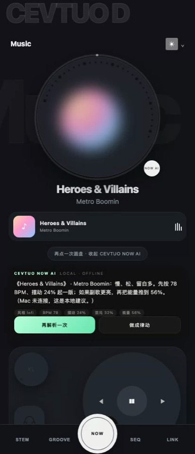
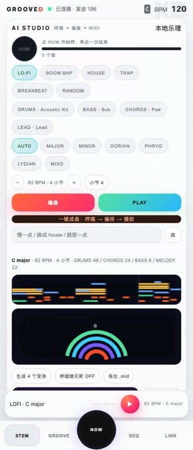
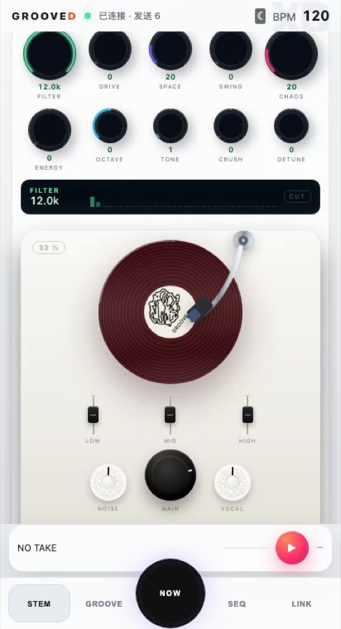
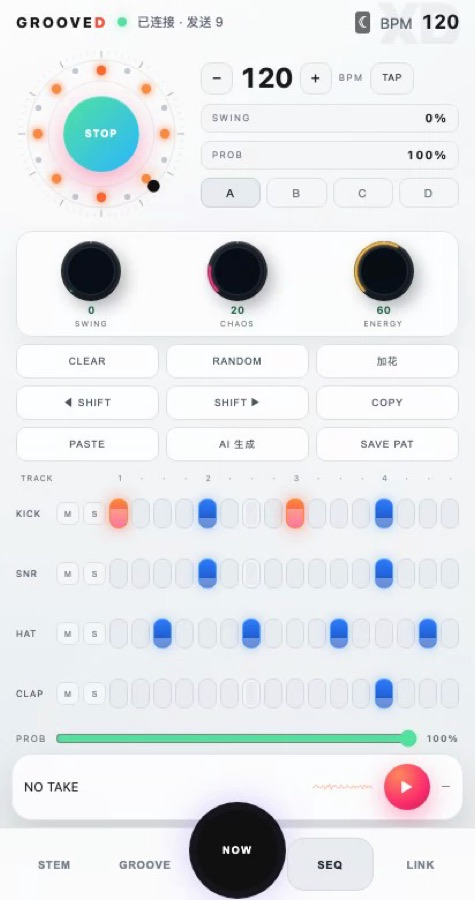
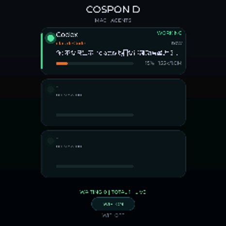
CEVTUOXD
系统由三端组成：M5Stack StopWatch 手表（ESP32-S3 固件）、Android 手机 App（WebView + 原生桥）、 Mac 端 Deno 服务。手机负责音频采集、编曲、实时处理和导出；手表负责演奏控件与 agent 状态显示； Mac 提供乐理引擎、LLM、CoreMIDI 和串口桥。手机端功能不依赖 Mac，只有 LLM 与外部 MIDI 需要连接。
应用矩阵
手机 · 手表 · Mac / Web
这个页面是给电脑浏览器看的（手机也能打开）；真正运行的是下面六个应用。 每个卡片都能跳到对应章节，下载链接放在同一张卡片里。
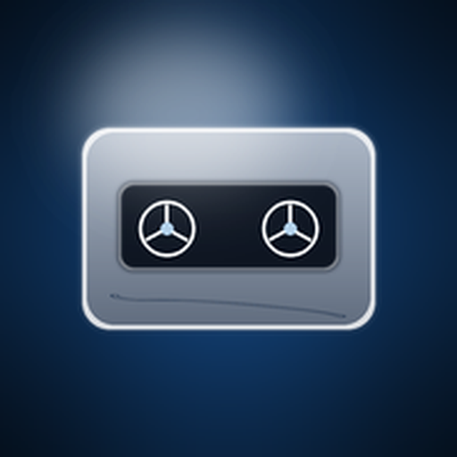
六个页面共用同一份会话表与行协议。
- STEM：YIN 哼唱 → 四轨编曲 → MIDI
- REAL-TIME：10 旋钮 + 唱机，接 WebAudio 并输出 CC
- GROOVE / SEQ：8 鼓垫、9 和弦垫、16 步 × 4 轨
- LINK：USB / Wi-Fi 地址、密钥、日志


8 个鼓垫、4 根 CC 推子、BPM / FX 旋钮、磁带机页。
- 触摸映射 NOTEON / NOTEOFF / CC
- BPM 与 FX 同链路
- 磁带机页做停止与变速
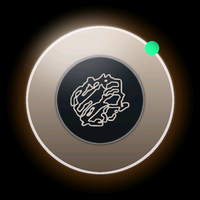
三张会话卡、最近 8 条对话、ALLOW / DENY、CONTINUE / HANDOFF、WIFI 双向。
- 快照 AG → END 一次性提交
- 对话自动换行、可滚动
- 状态行会写出 NO HOST / CONN FAIL / SHORT
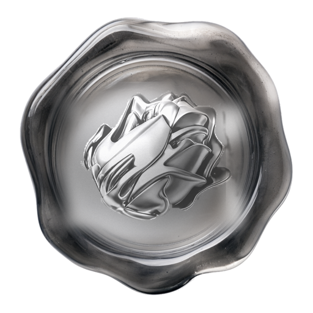
Mac 服务在 8765 端口提供的 Web UI。
- 设备 / Cospon D / Groove D / Stem
- Now Playing / Studio / MIDI
- agent 会话与审批队列
每条链路
都落到真实动作
设计约束是端到端可用：哼唱被拆成音高与时值，音高进入确定性编曲，编曲输出 MIDI， MIDI 可以写进 DAW，也可以送到手表；手表上的按键回到 Mac，触发 Agent 的继续与交接。 离线时手机端仍能完成采集、编曲、播放和导出，在线时才启用 LLM。
离线优先
播放器、唱机、鼓垫、和弦垫、音序器、本地合成、本地 MIDI 都不依赖 Mac。AI 和 LLM 才需要 Mac；连不上时会明确说“本地建议/本地随机”，不假装是在线结果。
确定性
编曲不是抽奖：同一个 seed、同一组参数、同一段哼唱，永远给同一份结果。变体、九种变异、对话修改、灵感 AI 都走同一个引擎，所以“再生成一次”和“改一个参数”是可解释的。
一条链
手机负责想法与声音，手表负责手上的动作，Mac 负责乐理、LLM、MIDI 与 Agent。三端用同一套行协议和同一份会话表，不各自维护第二套真相。
手机端
六个页面
六个页面共用同一份会话表和同一套行协议：NOW 读取系统媒体会话；STEM 负责哼唱与编曲； REAL-TIME 把旋钮和搓盘接进音频链并输出 MIDI；GROOVE 与 SEQ 共用 16 步状态；LINK 管理连接、地址、密钥和日志。
NOW
默认首页。白色玻璃播放器、32 点轨道、专辑封面、进度环和 CEVTUO NOW AI。点中央圆盘，AI 读歌名/歌手，给一句律动建议，再一键做成 STEM 编排。
STEM
哼唱 → YIN 音高 → Krumhansl 调性 → 四轨编曲。五个风格、七种调式、每角色八种音色；变体、九种变异、导出 MIDI、AI LIVE。
REAL-TIME
红胶、唱臂、三段 EQ、NOISE/MAIN/VOCAL；10 个新拟物旋钮真的接进音频链，搓盘和旋钮都会发 MIDI。
GROOVE
8 个彩色玻璃鼓垫、9 个彩色正圆和弦垫、XY 垫、4 根 CC 推子；能敲、能听回 16 步、能写回 STEM。
SEQ 2.0
16 步 × 4 轨、三档力度、M/S、A–D 模式库、概率/摆动/TAP、三个宏旋钮、径向灯轮；Mac 不在也能本地生成。
LINK
六格状态、Agent 1/0、API KEY、MAC HOST、发送 Mac 地址到手表、日志、主题；手机是整套系统的控制台。
手机端截图
六个页面的实际运行
截图来自 SM-F9660 上的 com.cevtuo.grooved，2026-10-20 实机截屏；
不是设计稿，也不是合成图。
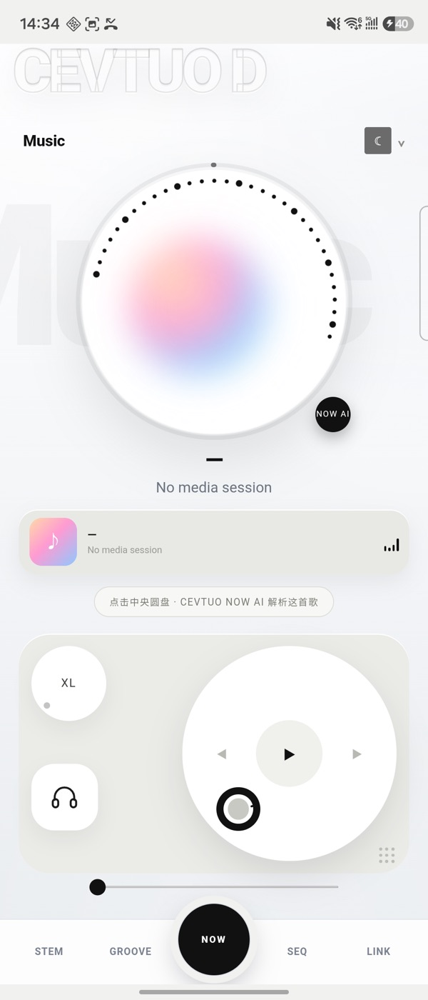
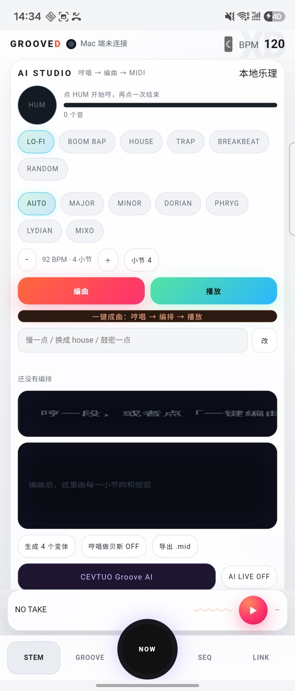


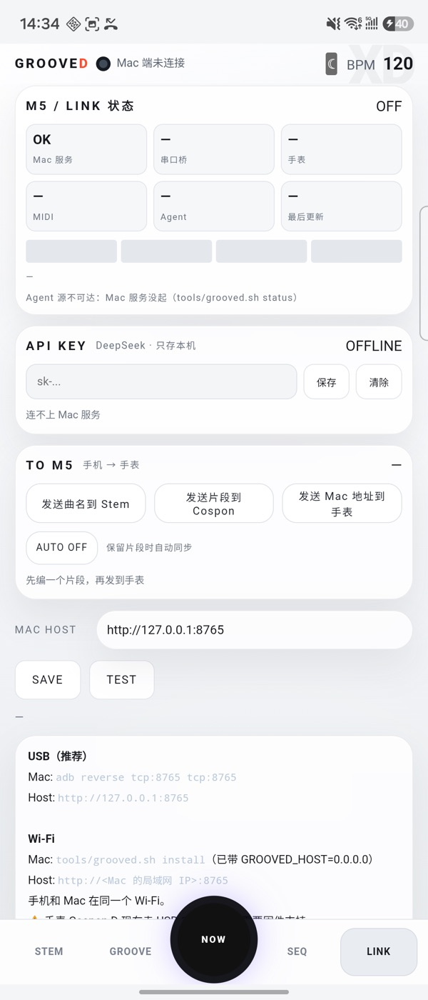
从哼唱
到四轨编排
音高由 YIN 计算，调性由 Krumhansl 模板匹配，编曲由确定性引擎生成。 同一段哼唱、同一组参数、同一个 seed 会得到同一份结果。哼唱会被拆成音高与时值，再按风格表 落到鼓、贝斯、和弦、旋律四轨；也可以只保留其中一轨。
从声音到四轨
- HUM：原生 AudioRecord 22050Hz；YIN 差分函数 + 累积均值 + 抛物线插值；5 帧中位 + 连续 2 帧一致才认音。
- 调性：12 音级按音长加权，和 24 个大小调 Krumhansl 权重相关，取最高分；可手动覆盖 7 种调式。
- 编曲：风格表给 16 分鼓型与和弦进行；chaos 加装饰音/力度抖动，energy 乘全轨，swing 推奇数 16 分。
- 音色：鼓/贝斯/和弦/旋律四角色各 8 种左右；采样 + WebAudio 合成；Reese +22 音分、Acid Q=12。
- 变体：4 个变体；busy/sparse/swing/straight/up/down/wild/hard/soft 九种变异。
- MIDI：自写 SMF Format 0，division 480，鼓通道 9；文件布局逐字节按规范。
实时演奏
控件与音频链
视觉参考 Vinyl Record Store、Neumorphic Dark Knobs、Knóbz、Knob 03。
FILTER 的旋转用 rAF 合帧并对数映射；PERFORM 的灯圈按指针角度点亮。
LOW 是 200Hz lowshelf、
MID 是 1.1kHz、HIGH 是 3.8kHz highshelf；NOISE 是黑胶底噪，MAIN 是主音量，VOCAL 是 2.8kHz presence。
所有参数都接入 WebAudio 链路，并同时发送 MIDI CC。
唱机
红胶凹槽、标签 logo + 歌名、唱臂、三段 EQ、底噪和 presence；搓盘发 PLATTER，松手有惯性。
10 个旋钮
凸起外环、刻入刻度、凹井、SVG 弧、旋转白点；FILTER 对数拖动，低频段不再一格一跳。
PERFORM
74px 铜色玻璃穹顶 + 34 点灯圈；指针转到哪里，哪里亮，角度同时映射 ENERGY。
鼓机与音序器
16 步 × 4 轨
GROOVE
8 个彩色玻璃垫（KICK/SNR/HAT/OPEN/CLAP/TOM/CRSH/RIDE），力度看触点纵向位置；BANK 切 DRUM/SYNTH/CHORD；9 个彩色正圆和弦垫、XY 垫、4 根 CC 推子；听懂鼓点并按 16 分格量化。
SEQ 2.0
16 步 × 4 轨，三档力度，M/S，A–D 模式库；CLEAR/RANDOM/加花/左右移/COPY/PASTE；PROB/SWING/TAP；三个宏旋钮同时写进 AI 参数；径向轮 72 根刻度随主题换色。
手表端
四个 App
手表界面用复古硬件语言：纯黑屏、米白点阵字、单一橙色呼吸点。
固件包含 Stem D、Groove D、COSPON D、Muse D 四个独立 App。
COSPON D 的卡片标题是项目名，副标题是 agent，不显示宿主 App；展开后显示最近 8 条对话，
自动换行并可滚动。数据来自 Mac：USB 串口每 2 秒推送一次快照；Wi-Fi 模式下手表主动轮询
/api/agents/watch。
 Stem D · 四段弧 / 黑胶
Stem D · 四段弧 / 黑胶 Groove D · 鼓垫 / CC
Groove D · 鼓垫 / CC COSPON D · 最近消息
COSPON D · 最近消息 Muse D · 第二个 OTA 槽
Muse D · 第二个 OTA 槽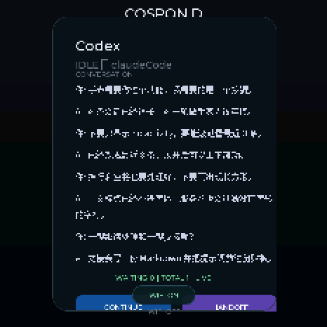
两个键，在一轮结束时出现
- CONTINUE：Codex 会话直接
codex exec resume <id>继续；其它 agent 把「继续处理」提示词放进 Mac 剪贴板，粘贴即可继续。 - HANDOFF：把会话、最近对话、项目与下一步写成
docs/handoff-时间.md，并把「读这份文档，然后继续」复制到剪贴板。 - ALLOW / DENY：有待批权限时单独浮层出现，按下发
G1 PERM <id> allow|deny。 - WIFI ON / OFF：一个键双向；开时连 Wi-Fi 并轮询
/api/agents/watch，关时断开站点/配置 AP。 - TURN：右柱显示本轮从最后一条用户消息开始的耗时（分/秒）；卡片状态行也带分钟。
- STEPS：点左侧
CTX柱切换CHAT ↔ STEPS，STEPS 里是最近 6 次工具调用。 - 居中：内容变化时把最新一条对话放在列表中线，不再永远贴底；内容不变时不打断你的滚动。
消息选择：服务端先倒着收 32 条，滤掉图片占位、续接摘要、工具结果和中断提示，再取最后 8 条；每条 70 字，按 UTF-8 字节裁到手表缓冲区。这样最新的 assistant 回复不会被几条 user 消息挤掉。
一轮进行中、assistant 的文本还没落盘时，服务端会把最近一次 thinking / tool_use 补成一条「AI 正在调用 …」的消息。所以展开后不会只剩用户自己说的话。
字体覆盖 ASCII、中文、中文标点和全角符号；服务端与串口桥都会过滤没有字形的字符，所以不会再出现一排长方形。换行由 LVGL 的 WRAP + 自适应高度负责，不再用固定高度裁掉后半句。
Wi-Fi 轮询按块读满整个 HTTP 响应再解析；旧实现单次读 4095 字节，快照超过这个长度时 END 永远到不了，表现就是“Wi-Fi 连上了但什么都不显示”。状态行现在会写出 NO HOST、CONN FAIL、SHORT，底部显示 LIVE 或 NO BRIDGE。
一轮结束时
两个动作
这两个键只在会话状态是 idle（这一轮结束）时出现，不跟 ALLOW/DENY 抢位置。
按下之后手表发 G1 ACTION <slot> continue|handoff，Mac 桥转到 /api/agents/action，
再把回执以 ACT 行送回手表。
CONTINUE · 继续处理
服务端把「继续处理。先读当前会话上下文，接着把未完成的做完；完成后简要汇报。」复制到 Mac 剪贴板。
- Codex 会话：直接
codex exec resume <thread-id> "继续处理" -C <cwd> -s workspace-write --approve-for-me，后台跑，日志写~/Library/Logs/grooved-continue.log。 - 其它 agent：没有可用的 CLI resume，所以只把提示词放进剪贴板；手表显示
CONTINUE READY，粘贴到对话框即可继续。 - 不静默：成功/失败都会以
ACT行回手表，失败不会假装成功。 - 回执在底栏保留 20 秒：
ACT CONTINUE READY/ACT HANDOFF READY/ACT … FAIL。旧版直接写详情状态行，而状态行每 2 秒被快照覆盖一次，所以看不见。 - 剪贴板写入会回读校验；launchd 里
pbcopy退出 0 但剪贴板为空的情况，会改用osascript再写一次。
HANDOFF · 交接给下一个窗口
服务端把会话、项目、agent、状态、token、transcript、最近 8 条对话和「下一步」写进
<cwd>/docs/handoff-YYYYMMDD-HHMM.md，并把「读 <path>，然后继续。」复制到剪贴板。
- Markdown 里保留原始对话，不压缩成一句摘要；下一个窗口能直接读。
- 文件写失败时返回
ok:false，手表显示HANDOFF FAIL，不会只报“成功”。 - 交接内容不包含宿主 App 名；只写项目、agent 和工作本身。
Mac 端
网页控制台
Mac 服务启动后在 8765 端口提供网页控制台（标题 Cevtuo-X-D）。
它和手机 App 不是同一份代码：这里看设备状态、agent 会话、MIDI 与 Studio 路由；手机 App 负责采集与演奏。
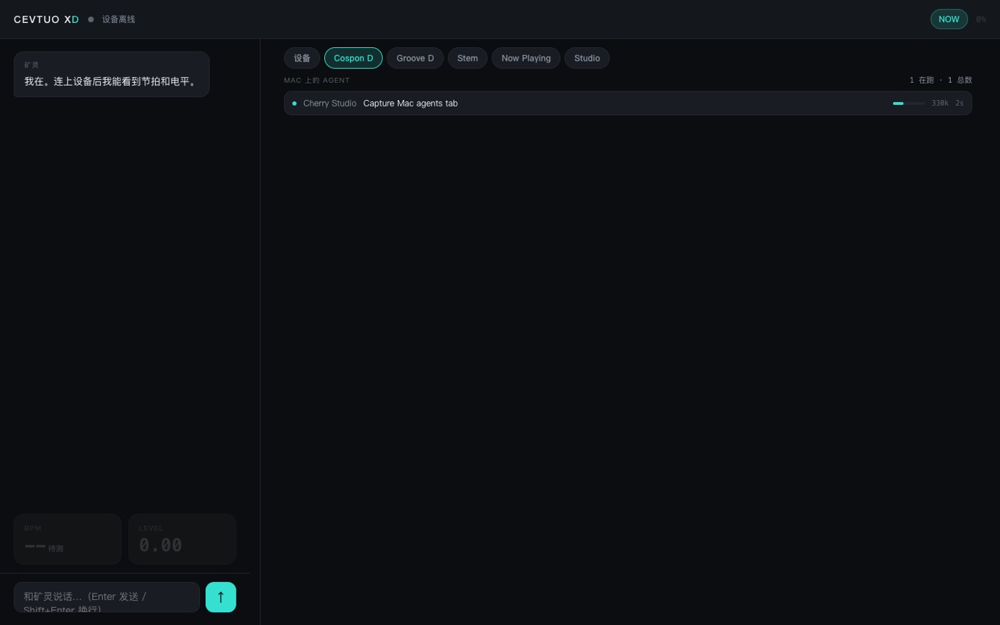
CEVTUO XD Web
六个页签：设备 / Cospon D / Groove D / Stem / Now Playing / Studio / MIDI。
地址是 http://<Mac 局域网 IP>:8765/。
它做什么
- 设备：BPM、电平、连接状态。
- COSpon D：agent 会话、上下文、审批队列。
- Groove D / Stem：推子、鼓垫、四段弧的镜像。
- Now Playing / Studio / MIDI：媒体信息、编曲结果、MIDI 路由。
它是 Mac 服务的一部分，不是独立 App；关掉服务就没有这个页面。
算法实现
与验证结果
YIN 音高
差分函数、累积均值归一化、第一个低于 0.20 的谷、抛物线插值；5 帧中位 + 连续 2 帧一致。离线 110–880Hz 全对。
Krumhansl 调性
12 音级直方图按音长加权，和 24 个大小调模板相关，取最高分；可被 7 种调式覆盖。
确定性编曲
风格表 + 16 分鼓型 + 和弦进行；chaos/energy/swing/humanize/transpose 都是可复现的变换；同 seed 同结果。
WebAudio 链路
input → 三段 EQ → filter → crush → drive → out；另有 delay/feedback/wet 与 analyser；采样 + 振荡器混合。
MediaProjection → CC
AudioPlaybackCapture + 一阶低通切 200/800/3000Hz 四段，RMS → 0..127，快起慢落，20Hz 发 CC20–23。
SMF 导出
Format 0、division 480；16 分=120 tick；tempo → program change → note on/off → end of track；鼓通道 9。
NOW AI / Groove AI
NOW AI 调 /api/studio/ask，把歌名/歌手 + 参数交给 LLM；离线用标题哈希给确定性建议。Groove AI 调 /api/studio/inspire，无 key 用本地灵感卡。
CrewTower → COSPON D
直接读 CrewTower 的机器级会话表，不另挂一套 hook；服务端加最近消息、待批队列、继续/交接动作。
USB / Wi-Fi 同一协议
AG/SESS/MSG/PERM/NET/END 一套行协议；USB 串口和 Wi-Fi HTTP 都送进同一个 handle_line()，不会长出两种行为。
视觉算法
黑胶 52 圈凹槽 + 旋转高光；新拟物外环/凹井/刻度 + SVG 弧；34 点灯圈按角度距离点亮；SEQ 72 根刻度按主题换色。
主题与系统栏
默认浅色，夜间按钮写 localStorage；状态栏/导航栏随页面与主题换色；WebView 避开 110px 顶部 cutout + 39px 导航。
离线降级
Mac 不在：NOW AI 用本地建议；SEQ/GROOVE 按风格密度本地随机并标注；播放器、唱机、鼓垫、和弦垫、音序器、本地 MIDI 全部可用。
视觉参考
与实现映射
每个参考都被拆成可复用的组件，再接到真实数据上；下面每一项都能在代码里找到对应的 DOM、canvas 或 CSS。
NOW · Music Play / Music
全幅封面底色 + 32 点轨道 + 中央彩色核心；玻璃大标题、点阵、耳机贴片、超大 Music 水印。专辑封面从 MediaSession 的 Bitmap 来，没有就退回彩色核心。
STEM · ES Polyphonic Synth
模块化的参数卡、钢琴卷帘/和弦弧、硬件式推子与旋钮；把“哼唱 → 四轨”做成一条可见的流水线，而不是一个黑色按钮。
REAL-TIME · Vinyl Store
奶油唱机、红胶、凹槽、可转标签、唱臂、三段 EQ、NOISE/MAIN/VOCAL；搓盘角度跟手，松手有惯性。标签中间是用户 logo，下面是歌名。
REAL-TIME · Neumorphic / Knóbz / Knob 03
凸起外环、刻入刻度、凹井、SVG 弧、旋转白点；PERFORM 的玻璃穹顶、34 点灯圈、指针和 ENERGY 联动；STUTTER/CLICK/JOG 改成玻璃胶囊 + LED。
GROOVE · Cruz GR / Music Mix
彩色玻璃鼓垫、左上名称、右上音名、底部力度条；9 个彩色正圆和弦垫；XY 垫和 4 根 CC 推子。力度看触点纵向位置，不是随机数。
SEQ · Mix Music / Music Wave
径向步进轮 + 72 根细刻度；16 步 × 4 轨、三档力度、M/S、A–D 模式库；浅色/夜间换色，当前步白点。
参考清单
Music 25645360 · Music Wave 27241914 · Music Mix 26761441 · Music Play 27260922 · Music App Dashboard 25706399 · ES Polyphonic Synth 18831756 · Cruz GR MIDI 27771393 · Mix Music 26761233 · Vinyl Record Store 23424412 · Neumorphic Dark Knobs 21408863 · Knóbz 14326768 · Knob 03 22440734。
每个参考至少落在两个地方：结构、材质、动效、控件手感，至少占两样。
行协议
与 HTTP 端点
行协议（USB / Wi-Fi 共用）
- AG：待批数 + 会话数，开始一次快照。
- SESS：agent / 宿主 / 状态 / 活动 / tokens / limit / 项目 / 年龄。
- MSG：最近 8 条对话，角色 + 文本。
- PERM：待批 id / 工具 / 参数；PERM - 表示没有。
- NET：Mac 局域网地址；END：快照结束，手表一次性重画；ACT：动作回执。
USB 串口和 Wi-Fi HTTP 都送进同一个 handle_line()，所以两条链路不会长出两种行为。
HTTP 端点
/api/agents/list：会话表 + 最近消息。/api/agents/watch：给手表的纯文本快照。/api/agents/request//wait//pending//decide：审批队列。/api/agents/action：CONTINUE / HANDOFF。/api/studio/ask//api/studio/inspire：LLM 与灵感。/api/groove/status：局域网 IP、服务状态。
所有返回都留退路：读不到就明确说读不到，不把“依赖坏了”伪装成“没有数据”。
功能清单
与代码位置
表格里的每一行都对应仓库里的真实代码路径：手机 UI 在 android/app/src/main/assets/index.html，
原生桥在 MainActivity.java，Mac 服务在 link/server.ts，手表 App 在 device/app/app_*/，
协议桥在 tools/grooved-serial-midi.swift。没有“先写介绍再补功能”的条目。
| 页面 / 端 | 功能 | 说明 |
|---|---|---|
| NOW | 默认首页 / 玻璃大标题 / 点阵圆盘 / 彩色核心 / 专辑封面 / 小封面卡 / 进度环 / 走带 / XL / MASTER 环 / 主题 / CEVTUO NOW AI / 离线建议 | 读 MediaSession；封面走原生 Bitmap；AI 可生成律动并切 STEM。 |
| STEM | HUM / 风格 / 调式 / 音色 / BPM / 小节 / 编曲 / 播放 / 一键成曲 / 4 变体 / 9 变异 / 保留丢弃 / 历史 / 哼唱做贝斯 / 导出 MIDI / 对话修改 / Groove AI / AI LIVE / 和弦行 | 确定性乐理 + LLM；采样 + 合成；失败有本地兜底。 |
| REAL-TIME | FILTER / DRIVE / SPACE / SWING / CHAOS / ENERGY / OCTAVE / TONE / CRUSH / DETUNE / LCD / 黑胶搓盘 / 唱臂 / 三段 EQ / NOISE / MAIN / VOCAL / 波形 / PERFORM 穹顶 / 灯圈 / STUTTER / CLICK / JOG 0 / OUT / MIDI 监视 | 全部接进音频链；搓盘发 PLATTER；旋钮发 CC 24–34。 |
| GROOVE | 8 鼓垫 / 力度三档 / DRUM-SYNTH-CHORD / ARP / 9 和弦圆垫 / XY / 4 CC 推子 / 生成 16 步 / 加花 / 听懂鼓点 / 写回 STEM / TAPE STOP / PANIC | 彩色玻璃垫 + 彩色正圆；本地发声 + MIDI。 |
| SEQ | 16 步 × 4 轨 / 三档力度 / M/S / A–D 模式 / CLEAR / RANDOM / 加花 / 左右移 / COPY / PASTE / AI 生成 / SAVE / PROB / SWING / TAP / BPM± / 3 宏旋钮 / 径向轮 / 本地试听 / 和弦 chips | 离线和在线都可生成；模式存 localStorage。 |
| LINK | 六格状态 / 手表反馈条 / Agent 1/0 + 活动 / API KEY / MAC HOST / SAVE/TEST / 日志 / 发送 Mac 地址 / 主题 | 手机端管理面；Wi-Fi 与 USB 两种入口。 |
| COSPON D | 3 张会话卡 / 详情 / 最近 8 条消息滚动 / 自动换行 / CONTINUE / HANDOFF / ALLOW / DENY / WIFI ON-OFF / HTTP 轮询 / NVS 保存 Mac 地址 / 震动提示 | 卡片只显示项目 + agent；不再显示宿主 App 名。 |
| Stem D / Groove D / Muse D | 四段弧 / 静音 / 独奏 / 黑胶搓盘 / now playing；8 鼓垫 / 4 CC / BPM/FX / 磁带机；第二个 OTA 槽 | 手表 → Mac 的 G1 协议；双系统分区。 |
| 音频 / AI | YIN / Krumhansl / 确定性编曲 / 9 变异 / WebAudio / 8 采样 / MediaProjection CC / SMF / LLM ask / inspire / 离线兜底 | 算法细节见上一节。 |
| 视觉 | 黑胶 / 唱臂 / 新拟物旋钮 / LCD / 玻璃穹顶 / 灯圈 / 彩色圆垫 / 玻璃垫 / 径向轮 / 玻璃大标题 / 浅色夜间 / 系统栏 / 折叠屏重排 | 12 个 Dribbble 参考，每个至少两个落点。 |
安装
与运行
手机
- 下载 GrooveD.apk（1.2 MB，debug 签名），允许未知来源安装。
- USB：Mac 执行
adb reverse tcp:8765 tcp:8765，LINK 的 MAC HOST 填http://127.0.0.1:8765。 - Wi-Fi：服务监听
0.0.0.0:8765，LINK 填http://<Mac 局域网 IP>:8765。 - 通知使用权：NOW 读媒体会话需要它，只读媒体信息。
手表固件
- 下载 固件包：四个 App 的 C++ 源码、12px CJK 字体、图标、预编译 bin、烧写脚本。
- 日常升级：
bash flash.sh /dev/cu.usbmodem1101（只写 0x20000，保留 Wi-Fi 凭据与已保存的 Mac 地址）。 - 整片恢复：
bash flash-full.sh（写 0x0 的 factory 镜像，会清掉 NVS）。 - 源码构建：
source/tools/apply-app.sh接进 M5Stack 上游树，再pio run -t upload。
Mac 宿主
- 下载 Mac 宿主包：Deno 服务、串口桥、LaunchAgent 安装脚本。
- 需要
deno；bash install.sh会装到~/Library/Application Support/。 - 服务必须监听
0.0.0.0:8765，手表才能从局域网访问；默认回环只够adb reverse。 - 日志：
~/Library/Logs/grooved-link.log、grooved-serial.log、grooved-continue.log。
手表连 Wi-Fi
- COSPON D →
WIFI ON→ 手表进入配置 APM5StopWatch-XXXX。 - 手机连这个 AP，填家里的 Wi-Fi，然后回到手机 App 的 LINK 页。
- 按「发送 Mac 地址到手表」；地址写进 NVS，之后开 Wi-Fi 会直接轮询。
- 状态行会写出具体状态：
WIFI <ip>、| NO HOST、| CONN FAIL、| SHORT。
页面里的八段录屏
- 全屏：NOW（圆盘/AI/主题）、STEM（编曲/钢琴卷帘）、GROOVE（鼓垫/和弦）、SEQ 2.0（16 步/宏）、LINK（状态/Agent）。
- 局部：REAL-TIME 唱机、10 个旋钮、PERFORM 穹顶；局部片段用更小的视口，聚焦到组件本身。
- 手表：Stem D / Groove D / COSPON D / Muse D 的 GIF；COSPON 详情展示 8 条消息和两个动作键。
- 录屏由 Playwright 驱动真实页面生成，不是后期合成；页面里的帧率、进度和文字都来自当时运行的那一份构建。